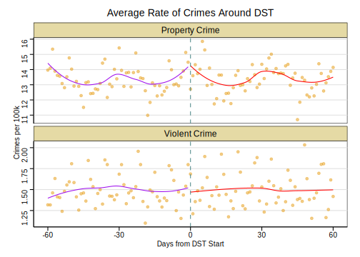

Analyzing the effect of DST on crime using regression discontinuity.
Author
Stephen Min
Published
October 27, 2024
All the data and raw code of this post can be found here
Most of us probably hate Daylight Savings Time (DST) – at least, I know I certainly do. A natural question that I’ve found myself asking is whether there’s any benefit to DST aside from its intended purpose.
It turns out that some researchers have had the same question. Doleac and Sanders (2015) found that DST caused a notable decrease in crime rates in the United States. Unfortunately, the results likely cannot be generalized to outside the United States since the mechanism through which DST affects crime rates is by increasing the average amount of ambient light during a typical day. This might lead to a higher chance of criminals being caught, thus potentially lowering crime rates. However, it’s also possible that this higher level of ambient light causes people to spend more time outdoors, resulting in more potential victims for criminals. There’s many other reasons why we might not see a decrease in crime rates from DST in other countries as well: different baseline levels of ambient light, different infrastructure, different crime patterns, and so on.
Since I happen to live in Vancouver, I’ll use a similar methodology to that of Doleac and Sanders (2015) to analyze whether DST has a comparable effect on crime rates in Vancouver.
Code
library(tidyverse)library(lubridate)library(kableExtra)library(broom)library(modelsummary)library(sandwich)library(lmtest)library(ggthemes)# ---- Light/dark mode stuff ----theme_light <-function() {theme_stata(scheme ="s1color")}theme_dark <-function() {theme_stata(scheme ="s1rcolor")}darksvglite <-function(file, width, height) {on.exit(reset_theme_settings())theme_set(theme_dark())ggsave(filename = file,width = width,height = height,dev ="svg",bg ="transparent" )}# ---- Functions for Analysis ----#' This function fits a linear regression designed to estimate the effect of#' `dst_dummy` on the specified outcome. Note that the formula is hard-coded.#'#' @param outcome Character string of the outcome variable name.#' @param bandwidth Numeric value specifying the bandwidth (number of days from DST).#' @param degree Numeric value specifying the polynomial degree for `days_from_dst`.#'#' @return An object of class `lm`.run_model <-function(outcome, bandwidth, degree) { polynomial_term <-if (degree ==1) {"days_from_dst" } else {paste0("poly(days_from_dst, ", degree, ", raw=TRUE)") } formula <-as.formula(paste( outcome, "~", polynomial_term, "* dst_dummy + day_of_week + rain + avg_temperature" ) )lm( formula, data = merged_data_clean, subset =abs(days_from_dst) <= bandwidth )}#' This function returns a string label for the model type based on the polynomial degree.#'#' @param degree Numeric value of the polynomial degree.#'#' @return A character string representing the model type (e.g., "Linear", "Quadratic").get_model_type_label <-function(degree) {if (degree ==1) {return("Linear") } elseif (degree ==2) {return("Quadratic") } elseif (degree ==3) {return("Cubic") } else {return(paste0("Degree ", degree, " Polynomial")) }}#' This function executes `run_model` for each outcome variable and polynomial degree,#' extracts the coefficient for `dst_dummy`, and compiles the results.#'#' @param outcomes Named character vector where names are variable names in the data #' and values are their corresponding labels.#' @param bandwidth Numeric value specifying the bandwidth (number of days from DST).#' @param degrees Numeric vector of polynomial degrees to use in the models.#'#' @return A data frame with the results for each model.get_models_results <-function(outcomes, bandwidth, degrees) { results_list <-list()# Note that names(outcomes) will return the variable names,# and outcomes[[outcome]] returns the labels.for (outcome innames(outcomes)) { crime_label <- outcomes[[outcome]]for (degree in degrees) { model <-run_model(outcome, bandwidth, degree) tidy_result <-tidy(coeftest(model, vcov = vcovHC), conf.int =TRUE) %>%filter(term =="dst_dummy") %>%mutate(crime_type = crime_label,model_type =get_model_type_label(degree),bandwidth = bandwidth ) results_list <-append(results_list, list(tidy_result)) } } results <-bind_rows(results_list)return(results)}
TL;DR
Using a regression discontinuity design, I find that DST likely has no effect on crime in Vancouver. These results are robust to changing the range of days around DST that are considered and to a different functional form.
The Methodology
Doleac and Sanders (2015) use what’s known as a sharp regression discontinuity design (RDD). The basic idea is to compare a small range of days before and after the start of DST (the usual terminology for this range is “bandwidth”) to see if there’s any noticeable change in crime rates.1 For this method to be valid, we would need crime rates within this range of DST to be”as good as random.” In other words, we’re assuming that there’s nothing that would cause a systematic change in the behavior of criminals when DST starts.
You might question whether this is a reasonable assumption to make – would it really be the case that crime rates are effectively randomly distributed around the start of DST? You would be right to do so. Doleac and Sanders (2015) point out that DST always starts on a Sunday, so we would need to account for this using day-of-week fixed effects. Weather patterns also influence crime rates, so it would be a good idea, though not strictly necessary, to also account for them.2
Formally, we would estimate the effect of DST on crime rates with the following equation:
crime = \alpha + \beta_1 days + \beta_2 DST + \beta_3 DST*days + \delta W + \gamma_{dow}
\tag{1} where days is the number of days from the start of DST, DST is a dummy variable equal to 0 before the start of DST and 1 after, W refers to weather variables, and \gamma_{dow} are day-of-week fixed effects. The coefficient in front of DST is what we are interested in. The choice of bandwidth is a bit arbitrary because we want an unbiased yet reasonably certain estimate of the effect of DST, so I will first use the bandwidth chosen by Doleac and Sanders (2015) (21 days), but later on I’ll alter the bandwidth as a robustness check on the initial results.
merged_data_clean <-read_csv("https://raw.githubusercontent.com/TopologicalDonut/My-Projects/refs/heads/main/Vancouver%20Crime%20Analysis/Data/Processed/merged_data_clean.csv")# Show first 10 rows of cleaned datadata_summary <- merged_data_clean %>%select(date, num_property_crime_perht, num_violent_crime_perht, avg_temperature, rain, days_from_dst, dst_dummy, day_of_week) %>%head(10) kbl(data_summary,col.names = (c("Date", "Property Crime per 100k", "Violent Crime per 100k","Average Temperature", "Rain", "Days from DST", "DST Dummy","Day of Week")),align =c('l', 'c', 'c', 'c', 'c', 'c', 'c', 'c'),booktabs = T,linesep ="",digits =3,caption ="First 10 Rows of Cleaned Data") %>%column_spec(1, width ="8em") %>%column_spec(2, width ="8em") %>%column_spec(3, width ="8em")
First 10 Rows of Cleaned Data
Date
Property Crime per 100k
Violent Crime per 100k
Average Temperature
Rain
Days from DST
DST Dummy
Day of Week
2003-02-05
25.088
1.031
2.59
0.0
-60
0
4
2003-02-06
23.198
1.375
2.75
0.0
-59
0
5
2003-02-07
24.057
1.375
3.25
0.0
-58
0
6
2003-02-08
22.167
2.062
3.55
0.0
-57
0
7
2003-02-09
19.074
1.031
3.55
0.6
-56
0
1
2003-02-10
19.589
1.547
2.50
0.0
-55
0
2
2003-02-11
19.761
1.375
1.95
0.0
-54
0
3
2003-02-12
20.276
1.718
3.40
0.0
-53
0
4
2003-02-13
19.933
2.406
3.45
0.0
-52
0
5
2003-02-14
23.541
1.718
7.50
0.0
-51
0
6
Note that the units for rainfall are mm, and Sunday is considered the first day of the week for the Day of Week column. The raw crime data was split into various types of theft, homicide, and offences against another person. I combined the crime into two main categories: property and violent.
The Results
RDD happens to be easy to visualize, so I’ll show some preliminary graphs before presenting an exact estimate of the effect of DST on crime rates. If there is a notable effect, then we would expect to see a “jump” in crime rates once DST starts.
Code
# Grouping crime into average per day so that the graphs are readable. Otherwise # there'd be too many data points.avg_crime_by_day <- merged_data_clean %>%group_by(days_from_dst, dst_dummy) %>%summarise(avg_property_crime =mean(num_property_crime_perht),avg_violent_crime =mean(num_violent_crime_perht),.groups ="drop" )# Need long format for graphsavg_crime_by_day_long <- avg_crime_by_day %>%pivot_longer(cols =c(avg_property_crime, avg_violent_crime),names_to ="crime_type",values_to ="crime_rate" ) %>%mutate(crime_type =case_when( crime_type =="avg_property_crime"~"Property Crime", crime_type =="avg_violent_crime"~"Violent Crime" ))theme_set(theme_light())ggplot(avg_crime_by_day_long, aes(x = days_from_dst, y = crime_rate)) +geom_point(alpha =0.5, colour ="#e69a0e") +geom_smooth(data =filter(avg_crime_by_day_long, dst_dummy ==0), se =FALSE, colour ="#a011ed", linewidth =0.5) +geom_smooth(data =filter(avg_crime_by_day_long, dst_dummy ==1), se =FALSE, colour ="red", linewidth =0.5) +geom_vline(xintercept =0, linetype ="dashed", colour ="darkslategray4") +facet_wrap(~crime_type, scales ="free_y", ncol =1) +labs(x ="Days from DST Start", y ="Crimes per 100k",title ="Average Rate of Crimes Around DST")

Figure 1: Graphs of the average crime rate per 100,000 people each day 60 days before and after the start of DST.
Based on the graphs, it seems like DST doesn’t have any effect on crime rates in Vancouver. However, this graph doesn’t include day-of-week fixed effects, so we need to use Equation 1 to get a proper estimate of the effect of DST.
Our estimates confirm the intuition from the graphs. Both estimates are close to 0, and the confidence intervals suggest that DST has little to no meaningful effect on crime rates in Vancouver.
Robustness Checks
It’s possible that the functional form of Equation 1 does not adequately capture the true effect of DST on crime. It’s also possible that the 21 day bandwidth I chose does not give good results for whatever reason. To check whether either of these are actual problems, I’ll run some additional analyses with a quadratic functional form:
\begin{aligned}
crime &= \alpha + \beta_1 days + \beta_2 days^2 + \beta_4 DST
\\ &+ (\beta_5 days + \beta_6 days^2)*DST + \delta W + \gamma_{dow}
\end{aligned}
along with bandwidths ranging from 2 weeks to 8 weeks.
Figure 2: Graphs of the estimates of DST on crime rates for different bandwidths and functional forms.
As we can see, the estimates are all fairly close in general. The confidence intervals become wider with smaller bandwidths, and the quadratic model shows more uncertainty – both of which we would expect. It seems like DST indeed has little to no effect on crime in Vancouver.
Conclusion
To recap, I’ve applied the sharp RDD methodology of Doleac and Sanders (2015) to Vancouver, yielding results that contrast with previous findings from the United States:
There is no statistically significant impact of DST on either property or violent crime rates in Vancouver.
This lack of effect persists across different model specifications and bandwidths (range of days), suggesting robust results.
A couple takeaways from these results:
Local Context Matters: This might be a bit obvious for anyone who understands that RDD estimates local treatment effects, but to reiterate – the discrepancy between these results and those of Doleac and Sanders (2015) underscores the importance of local context in understanding the relationship between ambient light and crime. Factors such as baseline daylight hours, urban infrastructure, and social patterns may all play a role in mediating the effect of DST on criminal activity.
Policy Implications: For policymakers in Vancouver considering the potential benefits or drawbacks of DST, these results suggest that crime reduction should not be considered a relevant factor in these deliberations. The lack of a detectable effect on crime rates indicates that other considerations, such as energy usage or public health, may be more relevant to DST policy decisions.
And of course, I’m personally happy that there is one less reason to have DST if we’re considering its effects in Vancouver.3
Changelog
2024-10-27: Initial post.
2024-11-06: Made changelog, changed robustness check methodology, and changed some of the code for graphs and tables.
2024-11-14: Minor formatting changes.
2024-11-28: Re-factored code and improved light/dark graph swap.
References
Doleac, Jennifer L., and Nicholas J. Sanders. 2015. “Under the Cover of Darkness: How Ambient Light Influences Criminal Activity.”Review of Economics and Statistics 97 (5): 1093–103. https://doi.org/10.1162/rest_a_00547.
Footnotes
This is a “sharp” RDD because there is a clear cutoff where all days after are affected by DST.↩︎
The RDD would ensure that estimates of the effect of DST are unbiased even when not accounting for weather, but including weather variables can improve the precision of our estimate.↩︎
This is a joke – dealing with DST is an easy trade-off for lower crime.↩︎
Source Code
---title: "How Does Daylight Savings Time Affect Crime in Vancouver?"description: "Analyzing the effect of DST on crime using regression discontinuity."author: - name: Stephen Mindate: 2024-10-27execute: message: false warning: falseformat: html: html-math-method: katex code-fold: true code-tools: true code-overflow: wrapdraft: falsebibliography: references.bibknitr: opts_chunk: dev: [svglite, darksvglite] fig.ext: [.light.svg, .dark.svg]include-after-body: text: | <script type="application/javascript" src="/light-dark.js"></script>---*All the data and raw code of this post can be found [here](https://github.com/TopologicalDonut/Vancouver-Crime-Analysis)*Most of us probably hate Daylight Savings Time (DST) – at least, I know I certainly do. A natural question that I've found myself asking is whether there's any benefit to DST aside from its intended purpose.It turns out that some researchers have had the same question. @doleac2015 found that DST caused a notable decrease in crime rates in the United States. Unfortunately, the results likely cannot be generalized to outside the United States since the mechanism through which DST affects crime rates is by increasing the average amount of ambient light during a typical day. This might lead to a higher chance of criminals being caught, thus potentially lowering crime rates. However, it’s also possible that this higher level of ambient light causes people to spend more time outdoors, resulting in more potential victims for criminals. There's many other reasons why we might not see a decrease in crime rates from DST in other countries as well: different baseline levels of ambient light, different infrastructure, different crime patterns, and so on.Since I happen to live in Vancouver, I'll use a similar methodology to that of @doleac2015 to analyze whether DST has a comparable effect on crime rates in Vancouver.```{r setup}library(tidyverse)library(lubridate)library(kableExtra)library(broom)library(modelsummary)library(sandwich)library(lmtest)library(ggthemes)# ---- Light/dark mode stuff ----theme_light <- function() { theme_stata(scheme = "s1color")}theme_dark <- function() { theme_stata(scheme = "s1rcolor")}darksvglite <- function(file, width, height) { on.exit(reset_theme_settings()) theme_set(theme_dark()) ggsave( filename = file, width = width, height = height, dev = "svg", bg = "transparent" )}# ---- Functions for Analysis ----#' This function fits a linear regression designed to estimate the effect of#' `dst_dummy` on the specified outcome. Note that the formula is hard-coded.#'#' @param outcome Character string of the outcome variable name.#' @param bandwidth Numeric value specifying the bandwidth (number of days from DST).#' @param degree Numeric value specifying the polynomial degree for `days_from_dst`.#'#' @return An object of class `lm`.run_model <- function(outcome, bandwidth, degree) { polynomial_term <- if (degree == 1) { "days_from_dst" } else { paste0("poly(days_from_dst, ", degree, ", raw=TRUE)") } formula <- as.formula( paste( outcome, "~", polynomial_term, "* dst_dummy + day_of_week + rain + avg_temperature" ) ) lm( formula, data = merged_data_clean, subset = abs(days_from_dst) <= bandwidth )}#' This function returns a string label for the model type based on the polynomial degree.#'#' @param degree Numeric value of the polynomial degree.#'#' @return A character string representing the model type (e.g., "Linear", "Quadratic").get_model_type_label <- function(degree) { if (degree == 1) { return("Linear") } else if (degree == 2) { return("Quadratic") } else if (degree == 3) { return("Cubic") } else { return(paste0("Degree ", degree, " Polynomial")) }}#' This function executes `run_model` for each outcome variable and polynomial degree,#' extracts the coefficient for `dst_dummy`, and compiles the results.#'#' @param outcomes Named character vector where names are variable names in the data #' and values are their corresponding labels.#' @param bandwidth Numeric value specifying the bandwidth (number of days from DST).#' @param degrees Numeric vector of polynomial degrees to use in the models.#'#' @return A data frame with the results for each model.get_models_results <- function(outcomes, bandwidth, degrees) { results_list <- list() # Note that names(outcomes) will return the variable names, # and outcomes[[outcome]] returns the labels. for (outcome in names(outcomes)) { crime_label <- outcomes[[outcome]] for (degree in degrees) { model <- run_model(outcome, bandwidth, degree) tidy_result <- tidy(coeftest(model, vcov = vcovHC), conf.int = TRUE) %>% filter(term == "dst_dummy") %>% mutate( crime_type = crime_label, model_type = get_model_type_label(degree), bandwidth = bandwidth ) results_list <- append(results_list, list(tidy_result)) } } results <- bind_rows(results_list) return(results)}```# TL;DRUsing a regression discontinuity design, I find that DST likely has no effect on crime in Vancouver. These results are robust to changing the range of days around DST that are considered and to a different functional form.# The Methodology@doleac2015 use what's known as a *sharp regression discontinuity design (RDD)*. The basic idea is to compare a small range of days before and after the start of DST (the usual terminology for this range is "*bandwidth"*) to see if there's any noticeable change in crime rates.[^1] For this method to be valid, we would need crime rates within this range of DST to be "as good as random." In other words, we're assuming that there's nothing that would cause a systematic change in the behavior of criminals when DST starts.[^1]: This is a "sharp" RDD because there is a clear cutoff where *all* days after are affected by DST.You might question whether this is a reasonable assumption to make – would it really be the case that crime rates are effectively randomly distributed around the start of DST? You would be right to do so. @doleac2015 point out that DST always starts on a Sunday, so we would need to account for this using day-of-week fixed effects. Weather patterns also influence crime rates, so it would be a good idea, though not strictly necessary, to also account for them.[^2][^2]: The RDD would ensure that estimates of the effect of DST are unbiased even when not accounting for weather, but including weather variables can improve the precision of our estimate.Formally, we would estimate the effect of DST on crime rates with the following equation: $$crime = \alpha + \beta_1 days + \beta_2 DST + \beta_3 DST*days + \delta W + \gamma_{dow}$$ {#eq-rdd} where $days$ is the number of days from the start of DST, $DST$ is a dummy variable equal to 0 before the start of DST and 1 after, $W$ refers to weather variables, and $\gamma_{dow}$ are day-of-week fixed effects. The coefficient in front of $DST$ is what we are interested in. The choice of bandwidth is a bit arbitrary because we want an unbiased yet reasonably certain estimate of the effect of DST, so I will first use the bandwidth chosen by @doleac2015 (21 days), but later on I'll alter the bandwidth as a robustness check on the initial results.# The DataI've gathered crime data from the [Vancouver Police Department website](https://geodash.%20vpd.ca/opendata/) and weather data from the [Vancouver Weatherstats website](https://vancouver.weatherstats.ca/). Here's a table showing some of the data after merging and wrangling everything.```{r data}merged_data_clean <- read_csv("https://raw.githubusercontent.com/TopologicalDonut/My-Projects/refs/heads/main/Vancouver%20Crime%20Analysis/Data/Processed/merged_data_clean.csv")# Show first 10 rows of cleaned datadata_summary <- merged_data_clean %>% select(date, num_property_crime_perht, num_violent_crime_perht, avg_temperature, rain, days_from_dst, dst_dummy, day_of_week) %>% head(10) kbl(data_summary, col.names = (c("Date", "Property Crime per 100k", "Violent Crime per 100k", "Average Temperature", "Rain", "Days from DST", "DST Dummy", "Day of Week")), align = c('l', 'c', 'c', 'c', 'c', 'c', 'c', 'c'), booktabs = T, linesep = "", digits = 3, caption = "First 10 Rows of Cleaned Data") %>% column_spec(1, width = "8em") %>% column_spec(2, width = "8em") %>% column_spec(3, width = "8em")```Note that the units for rainfall are mm, and Sunday is considered the first day of the week for the Day of Week column. The raw crime data was split into various types of theft, homicide, and offences against another person. I combined the crime into two main categories: property and violent.# The ResultsRDD happens to be easy to visualize, so I'll show some preliminary graphs before presenting an exact estimate of the effect of DST on crime rates. If there is a notable effect, then we would expect to see a "jump" in crime rates once DST starts.```{r graph}#| label: fig-rdd#| fig-cap: "Graphs of the average crime rate per 100,000 people each day 60 days before and after the start of DST."# Grouping crime into average per day so that the graphs are readable. Otherwise # there'd be too many data points.avg_crime_by_day <- merged_data_clean %>% group_by(days_from_dst, dst_dummy) %>% summarise( avg_property_crime = mean(num_property_crime_perht), avg_violent_crime = mean(num_violent_crime_perht), .groups = "drop" )# Need long format for graphsavg_crime_by_day_long <- avg_crime_by_day %>% pivot_longer( cols = c(avg_property_crime, avg_violent_crime), names_to = "crime_type", values_to = "crime_rate" ) %>% mutate(crime_type = case_when( crime_type == "avg_property_crime" ~ "Property Crime", crime_type == "avg_violent_crime" ~ "Violent Crime" ))theme_set(theme_light())ggplot(avg_crime_by_day_long, aes(x = days_from_dst, y = crime_rate)) + geom_point(alpha = 0.5, colour = "#e69a0e") + geom_smooth(data = filter(avg_crime_by_day_long, dst_dummy == 0), se = FALSE, colour = "#a011ed", linewidth = 0.5) + geom_smooth(data = filter(avg_crime_by_day_long, dst_dummy == 1), se = FALSE, colour = "red", linewidth = 0.5) + geom_vline(xintercept = 0, linetype = "dashed", colour = "darkslategray4") + facet_wrap(~crime_type, scales = "free_y", ncol = 1) + labs(x = "Days from DST Start", y = "Crimes per 100k", title = "Average Rate of Crimes Around DST")```Based on the graphs, it seems like DST doesn't have any effect on crime rates in Vancouver. However, this graph doesn't include day-of-week fixed effects, so we need to use @eq-rdd to get a proper estimate of the effect of DST.```{r model estimation}model_property <- run_model("num_property_crime_perht", 21, degree = 1)model_violent <- run_model("num_violent_crime_perht", 21, degree = 1)modelsummary( list("Property Crime" = model_property, "Violent Crime" = model_violent), coef_map = c("dst_dummy" = "DST Effect"), vcov = "robust", gof_map = c("nobs", "vcov.type"), statistic = c("conf.int", "s.e. = {std.error}"), stars = TRUE, title = "Effect of DST on Crime per 100k")```Our estimates confirm the intuition from the graphs. Both estimates are close to 0, and the confidence intervals suggest that DST has little to no meaningful effect on crime rates in Vancouver.# Robustness ChecksIt's possible that the functional form of @eq-rdd does not adequately capture the true effect of DST on crime. It's also possible that the 21 day bandwidth I chose does not give good results for whatever reason. To check whether either of these are actual problems, I'll run some additional analyses with a quadratic functional form: $$\begin{aligned}crime &= \alpha + \beta_1 days + \beta_2 days^2 + \beta_4 DST\\ &+ (\beta_5 days + \beta_6 days^2)*DST + \delta W + \gamma_{dow}\end{aligned}$$ along with bandwidths ranging from 2 weeks to 8 weeks.```{r robustness check}#| label: fig-robust#| fig-cap: "Graphs of the estimates of DST on crime rates for different bandwidths and functional forms."outcomes <- c( num_property_crime_perht = "Property Crime", num_violent_crime_perht = "Violent Crime")bandwidths <- seq(14, 56, by = 7)degrees <- c(1, 2)all_results <- map_dfr( bandwidths, ~ get_models_results(outcomes, .x, degrees))ggplot(all_results, aes(x = bandwidth, y = estimate, ymin = conf.low, ymax = conf.high, color = model_type)) + geom_point(position = position_dodge(width = 3)) + geom_errorbar(position = position_dodge(width = 3), width = 2) + geom_hline(yintercept = 0, linetype = "dashed", color = "darkslategray4") + facet_wrap(~crime_type, scales = "free_y") + labs(x = "Bandwidth (Days)", y = "Estimated DST Effect", color = "Model Type", title = "DST Effects Across Different Bandwidths", subtitle = "Point Estimates and 95% Confidence Intervals") + scale_x_continuous(breaks = bandwidths)```As we can see, the estimates are all fairly close in general. The confidence intervals become wider with smaller bandwidths, and the quadratic model shows more uncertainty – both of which we would expect. It seems like DST indeed has little to no effect on crime in Vancouver.# ConclusionTo recap, I've applied the sharp RDD methodology of @doleac2015 to Vancouver, yielding results that contrast with previous findings from the United States:1. There is no statistically significant impact of DST on either property or violent crime rates in Vancouver.2. This lack of effect persists across different model specifications and bandwidths (range of days), suggesting robust results.A couple takeaways from these results:1. **Local Context Matters**: This might be a bit obvious for anyone who understands that RDD estimates local treatment effects, but to reiterate – the discrepancy between these results and those of @doleac2015 underscores the importance of local context in understanding the relationship between ambient light and crime. Factors such as baseline daylight hours, urban infrastructure, and social patterns may all play a role in mediating the effect of DST on criminal activity.2. **Policy Implications**: For policymakers in Vancouver considering the potential benefits or drawbacks of DST, these results suggest that crime reduction should not be considered a relevant factor in these deliberations. The lack of a detectable effect on crime rates indicates that other considerations, such as energy usage or public health, may be more relevant to DST policy decisions.And of course, I'm personally happy that there is one less reason to have DST if we're considering its effects in Vancouver.[^3][^3]: This is a joke – dealing with DST is an easy trade-off for lower crime.## Changelog- 2024-10-27: Initial post.- 2024-11-06: Made changelog, changed robustness check methodology, and changed some of the code for graphs and tables.- 2024-11-14: Minor formatting changes.- 2024-11-28: Re-factored code and improved light/dark graph swap.